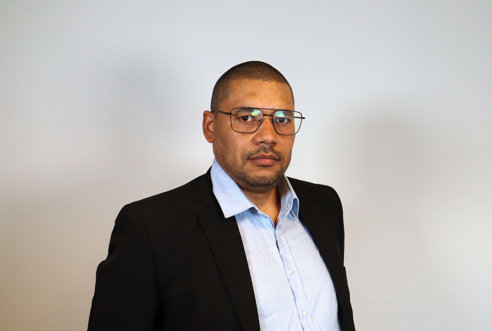

Systems Engineer — designs and builds, from low-level performance to GitOps
Professionsbachelor i Softwareudvikling · AI-orchestrated workflow
I built and run MyFoodBudget, a whole SaaS in production, solo: PostgreSQL and a Flask backend, two Kubernetes clusters with GitOps through Flux, CI/CD, full monitoring, and encrypted backups. The same depth runs from boids performance and a hand-built graphics engine up to GitOps in production.

A meal planning SaaS that turns recipe choices into store-grouped shopping lists with real deal matching across Danish grocery chains. I built every layer alone, from the PostgreSQL database and Flask backend to a mobile-first frontend, and it runs live in production today. Over 2000 tests. This is the full thing, not a demo.
Learn MoreMy first self-hosted server, and where DevOps started for me. I took my exam project and put it live in production on my own machine, reachable from the internet through a Cloudflare Tunnel, with Docker, CI/CD, and auto-updating images. The base I carried into every later project.
Learn MoreBackend platform for an Unreal Engine multiplayer game. Six .NET services in Kubernetes, managed by Flux CD with automated GitOps promotion through dev, staging, and prod. I built the whole DevOps side plus a custom resilience NuGet package applied across every service.
Learn MoreA semester abroad in Vancouver, working at the Centre for Digital Media on a real client project for Buffalo Buffalo, a game studio. Zimo and I were the code team on the game's runtime level editor. I built multi-selection and grouping, which cut level design time in half in the first test.
Learn More